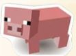
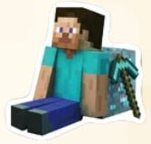
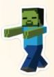
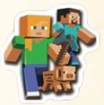

Minecraft Gamemodes
1.) Survival
In survival mode, you must collect and gather materials to build, craft, and survive. You have a health, hunger, armor, and oxygen (only when you are underwater) bar so you can see your overall stats or status bar. You will lose hunger bars over time (unless played in peaceful) and you have to eat to restore them. Losing all your hunger bars, taking damage from the environment (fall damage, suffocation, lava, etc.) or hostile mobs will deplete your health bar. When you lose all your health, you will die and return to your spawn point.
2.) Creative
Creative mode is all about being creative. All players are invulnerable. Hostile mobs will not harm you and you cannot die from fire, drowning, or fall damage. However, in Java Edition, you can die if you fall into the endless void. You also do not have a status bar and you can fly. You also have access to all blocks, items, and spawn eggs, which can spawn mobs. You can build anything you want in creative mode. So, be creative!
 3.) Adventure
Adventure mode is similar to Survival mode. Players can interact with mobs, take damage, have hunger, but they cannot break blocks. This is to protect maps, like custom maps and servers from being destroyed by players. Only tools with CanDestroy NBT tag can break blocks and blocks with CanPlaceOn NBT tag are allowed to be placed.
4.) Hardcore
(Java Edition only)
Hardcore mode is also much similar to survival. You can gather, collect, and break items. You can interact with your environment and take damage. The difference is that when you die, you don’t respawn anymore. You only have one life. The difficulty is also locked into hard mode. If you die, you must either delete the map or switch to spectator mode permanently.
5.) Spectator
(Java Edition only)
I’d like to think of spectator mode as being a ghost. This mode is all about spectating. You can pass through blocks and you are invisible to all players and mobs, except for other spectators. You can’t interact with blocks, your inventory, mobs, or other entities. You can also see the perspective of other players and entities by left-clicking on them.
